Taskfile
Tasks and included tasks, using their names and descriptions. Internal tasks stay out of the list.
task 'docs:serve'ONE PLACE FOR PROJECT COMMANDS
runui finds the tasks, scripts, targets, services, and builds in a folder. Pick one, watch its output, and close the interface whenever you like. The command keeps running until you stop it.
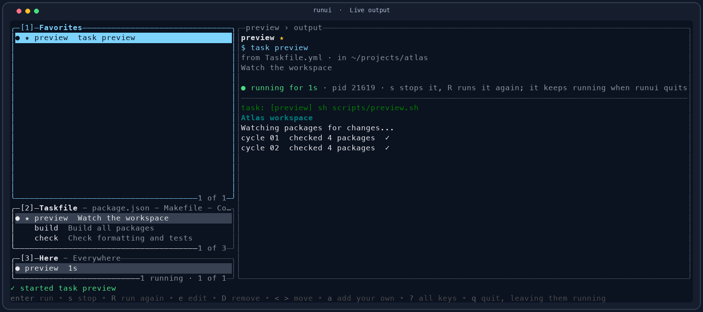
GET MOVING
Build from this repository with Rust 1.88 or newer on macOS or Linux. Task is the shortest route; Cargo works directly too.
task installInstalls to ~/.local/bin.
cargo install --path crates/runui --root ~/.local --lockedPut ~/.local/bin on your PATH.
$ runui
$ runui -C ~/projects/atlas
$ runui list
$ runui psrunui discovers commands; the corresponding tool must be installed to run one. For example, a Taskfile task needs task, and a Compose service needs Docker Compose.
THE CORE LOOP
Choose a row in Project, or press / and filter by its name, folder, command, or description.
Press enter. The command starts in the folder where its project file lives, and its output appears in the right pane.
Press q or close the terminal. A separate supervisor keeps the command running and saves what it prints.
Open runui again. Select the run to read its output, press s to stop it, or R to run it again.
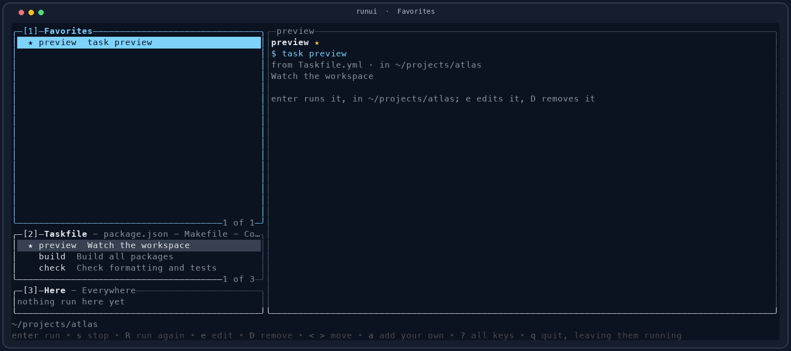
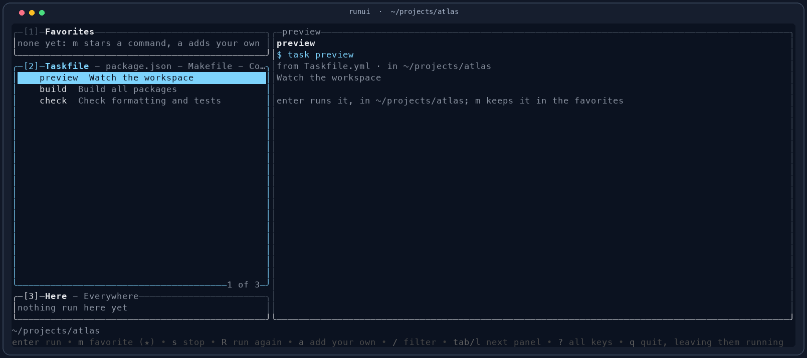
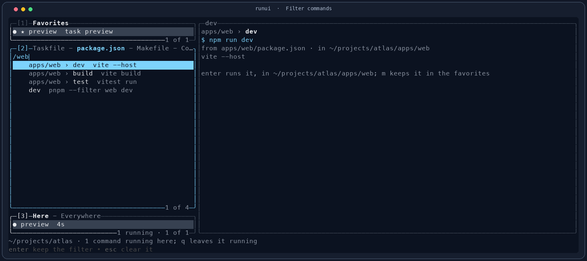
DISCOVERY
runui starts at the nearest project folder above your current directory, stopping at the repository root. It reads that folder and folders under it three levels deep. A command from apps/web is labeled with that path and runs there.
Tasks and included tasks, using their names and descriptions. Internal tasks stay out of the list.
task 'docs:serve'Scripts through pnpm, yarn, bun, or npm, as the package manager field or nearest lock file selects.
pnpm run devTargets with their ## comments shown beside them.
make testStart all services, rebuild, stop, inspect, follow logs, or start a single service.
docker compose upInstall, verify, test, and profile builds. Uses the project's mvnw when it has one.
./mvnw clean verify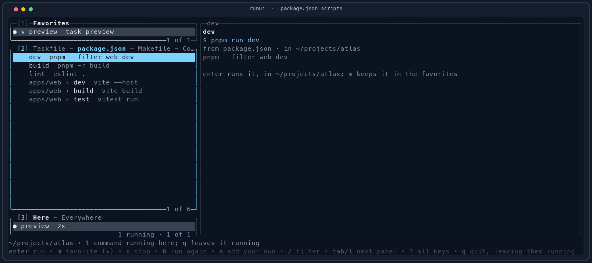
apps/web.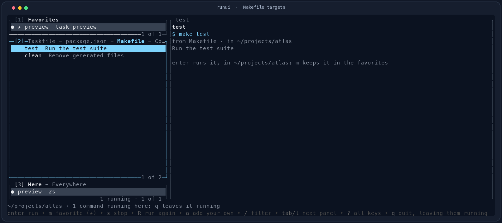
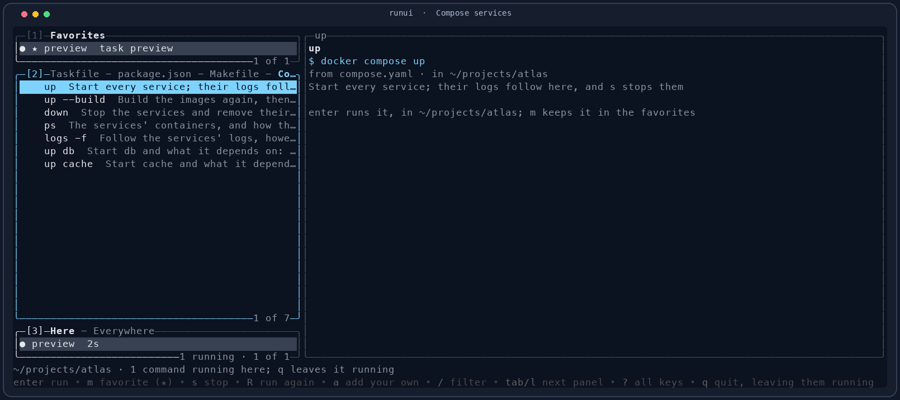
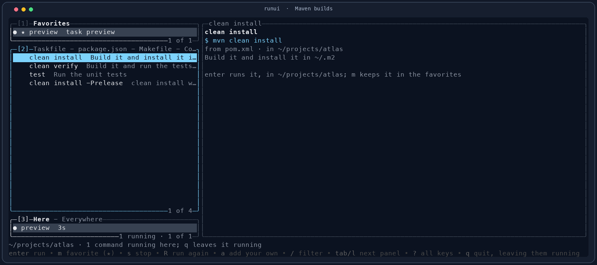
runui notices edits to files it reads. Press r to scan again, including newly added files in nested folders.
MAKE IT YOURS
Press m on a project command to keep it in this folder's Favorites panel. Press a to add a named command of your own, entered exactly as you would run it with sh in this folder.
Point back to a task, script, target, service, or build. You can remove the star with m.
Created with a. Edit with e, reorder with < and >, or remove with D.
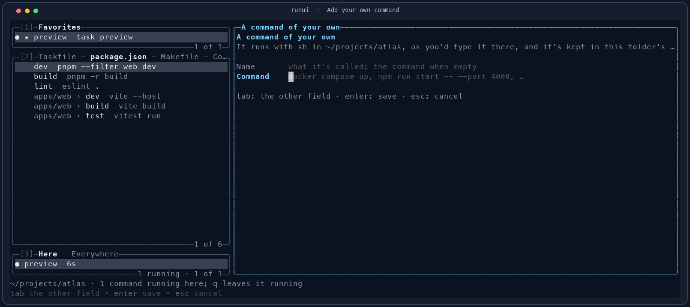
PERSISTENT BY DESIGN
Every command has its own supervisor and output file. The Runs panel shows runs in this project under Here, with an Everywhere tab for runs from other folders. Selecting a run brings its stored output back into view.
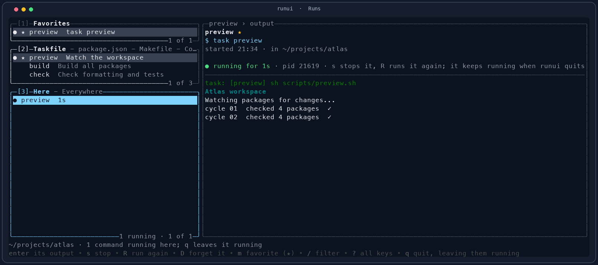
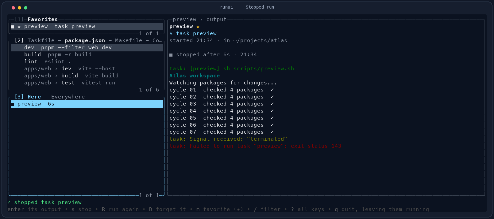
Stopping sends SIGTERM to the command's process group, then SIGKILL after five seconds if it is still there. Press D on an ended run to forget it and its output. runui retains up to 40 ended runs across folders.
STAY IN FLOW
Press ? inside runui for the complete in-app key sheet. The mouse can select rows and scroll output too.
| Keys | What they do |
|---|---|
| tab / shift+tab, 1–3 | Switch between Favorites, Project, and Runs. |
| [ / ] | Switch file type or Here / Everywhere tab. |
| j / k, g / G | Move through rows or jump to the first / last row. |
| /, esc | Filter the current tab; clear the filter. |
| enter, s, R | Run, stop, or restart; enter on a run focuses its output. |
| 0, esc, + / _ | Focus output, return to the panel, or give output the full window and restore it. |
| pgup / pgdn, J / K | Scroll output from a panel; G there resumes following it. |
| m, a, e, D | Star, add, edit, or remove a favorite; forget an ended run with D. |
| < / >, y, r | Reorder a favorite, copy a command, or reload project files. |
| q | Quit while commands keep running. |
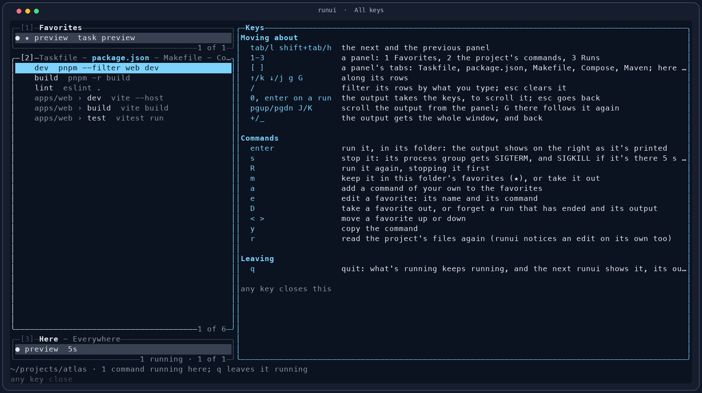
FROM THE SHELL
runui [-C DIR]Open the interface in the current project or a specified folder. runui -h prints its built-in help.
runui list [-C DIR]Print this folder's favorites, discovered commands, and runs. This only reads data.
runui psPrint every run from every folder, with live runs first.
Use task run -- -C DIR while working in this repository to build and launch the local binary with arguments.
UNDER THE HOOD
Favorites and runs use the same paths and file formats as the original Go app. The Go build can find, follow, and stop a Rust run, and the Rust build can do the same for a Go run.
~/.config/runui/favorites.jsonor under $XDG_CONFIG_HOME~/.local/state/runui/runs/or under $XDG_STATE_HOMEA run's folder holds run.json, output.log, and a lock held by its supervisor. The lock tells the next runui whether the run is still alive, even after the first interface exits.